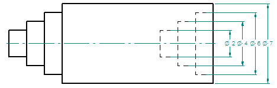
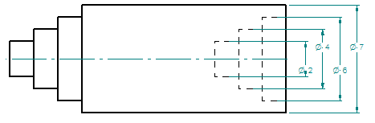
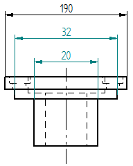
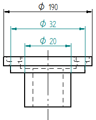

Formatting symmetric diameter dimensions
You can predefine the formatting of symmetric diameter dimensions by setting the following options in the dimension style. You also can modify individual dimensions using the Dimension Properties dialog box.
-
You can make dimensions easier to read by alternating the position of dimension text in stacked and grouped symmetric diameter dimensions. Use the Alternate text positions option on the Lines and Coordinate tab (Dimension Style and Dimension Properties) to do this.
Example:Use this option to prevent dimension text from overlapping.
Alternate text positions
Before

After

-
You can specify that the dimension line for the symmetric diameter dimension extends under all of the dimension text. Use the Underline symbol and prefix option on the Lines and Coordinate tab.
Example:Use this option to extend the dimension line under the dimension symbol and dimension prefix.
Underline symbol and prefix
On

Off

-
You can prevent the diameter symbol from appearing on the dimension line. Use the Suppress symmetric diameter option on the Terminator and Symbol tab (Dimension Style and Dimension Properties).
Example:Use this option to show or hide the diameter symbol on the symmetric dimension.
Suppress symmetric diameter
Suppressed

Unsuppressed
